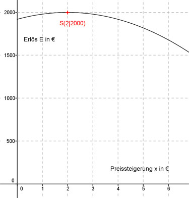

Aufgabe 116 Ein Zoo hat bei einem Eintrittspreis von 8 € durchschnittlich 240 Besucher. Wird der Eintrittspreis um 0,5 € erhöht, dann sinkt die Besucherzahl um 10, erhöht man um 1 € sinkt sie um 20. Bei welchem Eintrittspreis x sind die Einnahmen am größten? Steigt der Eintrittspreis um 0,5 €, kommen 10 Besucher weniger. Steigt der Eintrittspreis um 1 €, kommen 20 Besucher weniger. Preissteigerung sei x €. Die Abnahme der Besucheranzahl ist x * 20 Besucheranzahl nach einer Preissteigerung: 240 - x * 20 Eintrittspreis nach einer Preissteigerung = 8 € + x € Einnahmen E(x) = Besucheranzahl * Eintrittspreis nach Preissteigerung: E(x) = (240 - x * 20)(8 + x) E(x) = 1 920 - 160 * x + 240 * x - 20 *x2 E(x) = - 40x2 + 80x + 1920 Dies ist die Funktionsgleichung einer nach unten geöffneten, gestreckten Parabel, deren höchster Punkt der Scheitelpunkt ist. E(x) = - 20x2 + 80x + 1920 | :(-20) E(x) - ----- = x2 - 4x - 96 20 Quadratische Ergänzung: E(x) - ------ = x2 - 4x + 4 - 4 - 96 20 mit x2 - 4x + 4 = (x - 2)2 E(x) - ------ = (x - 2)2 - 100 |*(-20) 20 E(x) = -20(x - 2)2 + 2 000 Scheitelpunkt abgelesen: S(2|2 000) Die Scheitelpunktkoordinaten bedeuten: Ist die Preissteigerung x = 2 €, entstehen die größten Einnahmen E = 2 000 €. Der Eintrittspreis beträgt dabei 10 €. 